Flagship case study
UTern. Making the internship hunt feel less like begging and more like being found.
CMO — brand, growth and product work
May 2026 – present
Seven students, spread across the country
Voice, launch content, blog, newsletter, measurement, SEO
12 pull requests merged to production
UTern is an AI internship agent for college students. Two agents, one on each side of the table: Bob works for the student, Barb works for the employer. When I joined, the product worked. The story didn't. In a category where every competitor sounds like a career-services office, UTern needed to sound like the one company that actually remembers being twenty and unemployed in April.
I came in as CMO. I stayed as the person who also opens the repo, because the voice kept needing surfaces that didn't exist yet.
Students don't trust career platforms, because career platforms talk like LinkedIn wrote them. The task wasn't awareness. It was believability. How does an AI recruiting tool earn the trust of an audience that is allergic to corporate speak and pattern-matched to skip anything that smells like an ad?
And underneath that, a harder one. A brand that sells proof cannot be sloppy about its own evidence. Every claim we made was a claim we would be held to.
The insight: the internship hunt is an emotional experience. Rejection emails at 2am. "We've decided to move forward with other candidates." The group chat panic. Nobody in the category was speaking to the feeling, only to the function.
So the voice strategy was simple. UTern talks like the friend who already got the offer. Direct, funny about the pain, dead serious about the outcome. Every piece of content had to pass one test: would a student send this to their group chat?
The positioning, made real
The whole platform hangs on one line: an agent on both sides of the table. The voice had to earn trust the category never does, and it had to live on every surface, not just the ads. Copy that sounds like a friend with the offer, right down to "a match, with the receipts."
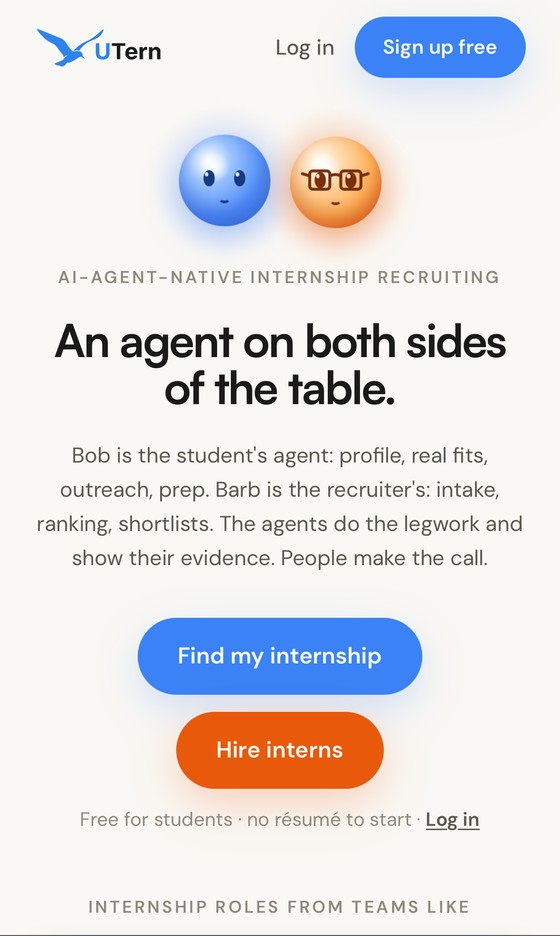
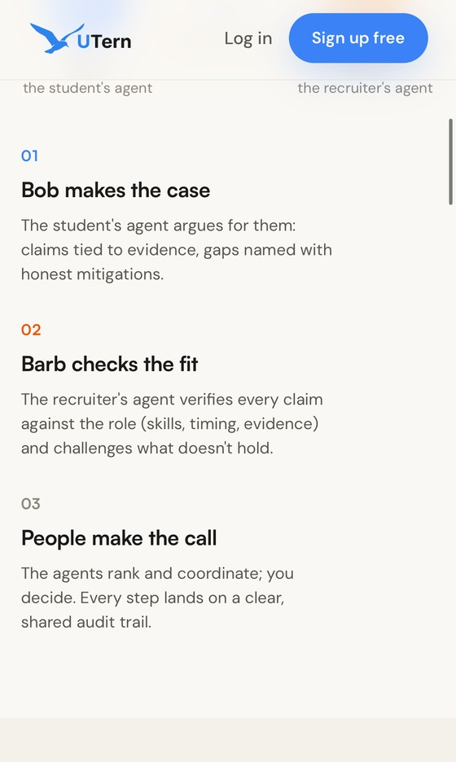

Bob & Barb
Two agents, one on each side. Bob works for the student; Barb works for the recruiter. Giving the AI a face and a name is what turns it from surveillance into help, and it gives the whole product a consistent voice, from onboarding to the shortlist.
Bob · the student's agent
Barb · the recruiter's agent
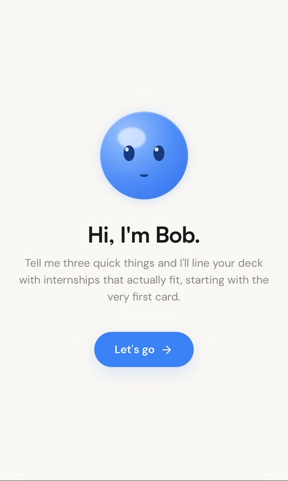
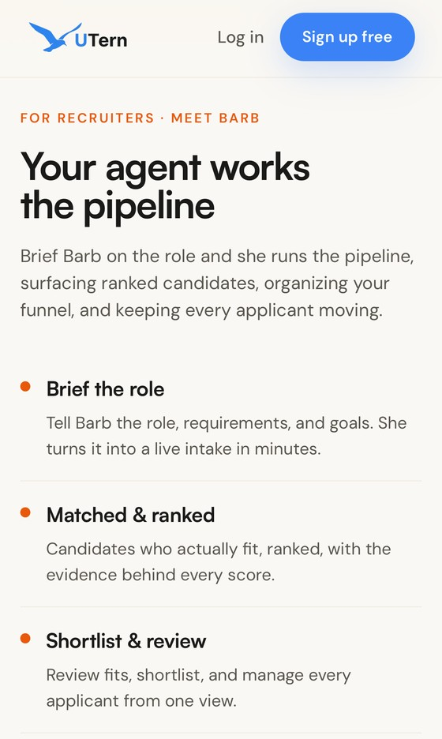
The student's side
From "Hi, I'm Bob" to a ranked shortlist with receipts: the search, the chat, the matches, and the moment it hands back roles worth applying to. Every screen carries the same voice.
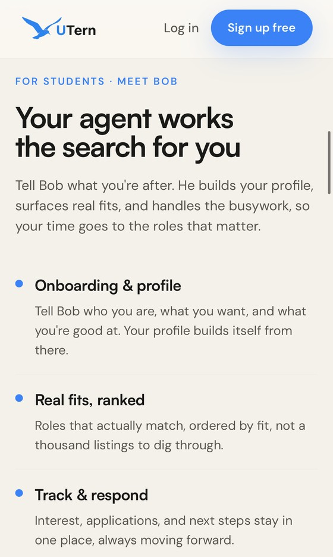
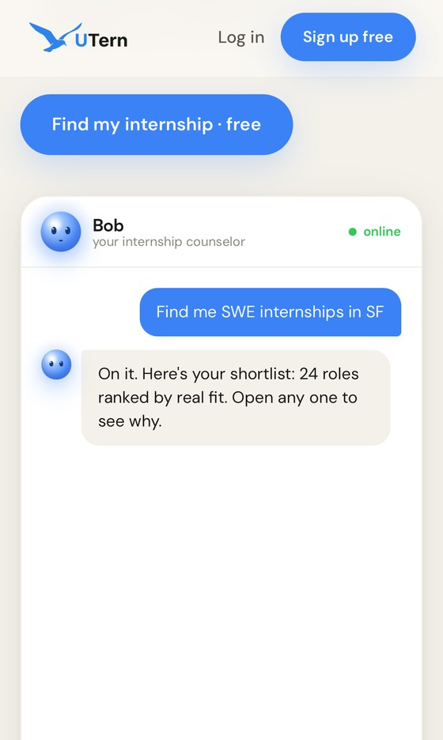
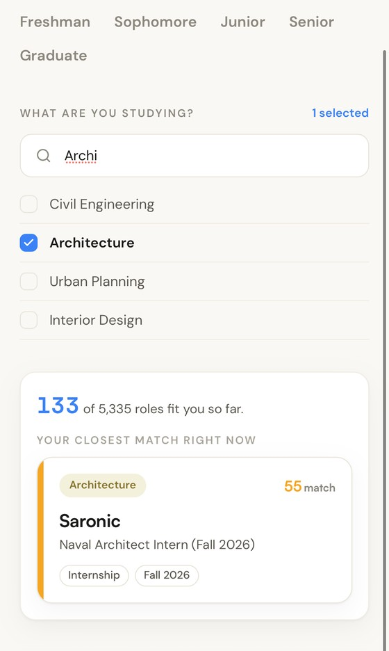
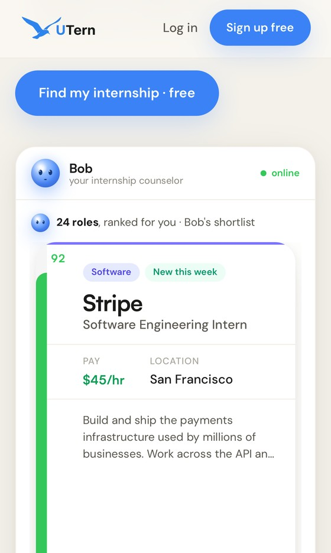
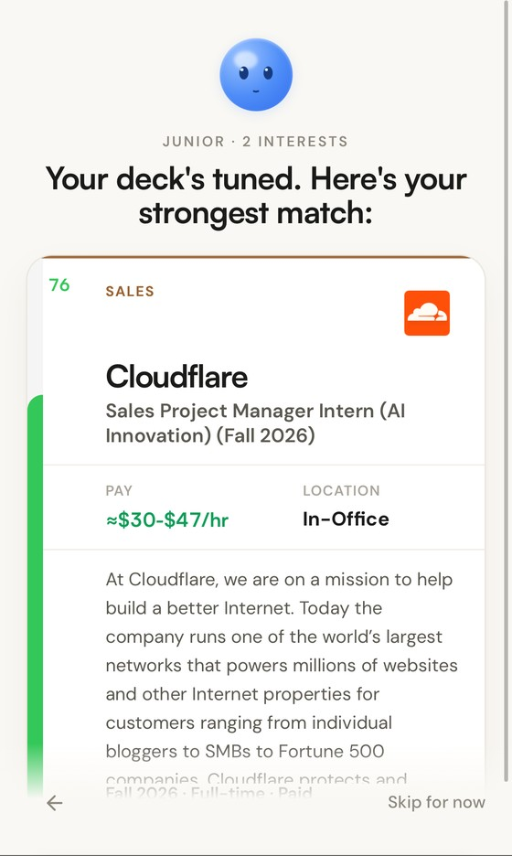
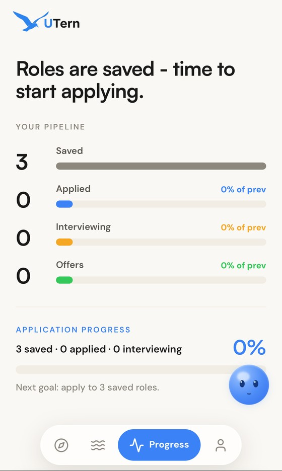
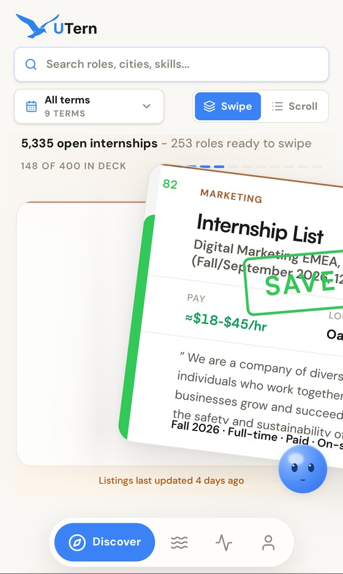
We started as "Tinder for internships." Investors didn't like the sound of it — too bubbly, too easy to dismiss. So we repositioned around what the product actually does for students: a platform for self-discovery, where the agent doesn't just match you, it helps you work out what you're looking for.
A voice with nowhere to speak is a slide deck. The blog didn't exist. The newsletter didn't exist. The analytics couldn't tell us whether a student had signed up. So rather than file tickets and wait, I learned the codebase and built them — in the same private Next.js repo the engineers work in, reviewed and merged like anyone else's.
The blog, and the editor behind it
A reader at /blog with its own typography controls, an
admin editor for writing and publishing, an RSS feed, and a
generated share card for every post. Written so the marketing team
can publish without a deploy.
A newsletter with real consent
The account system could only describe people who already had accounts, so a student who read a post and wanted the weekly email had nowhere to go. I built that door: a public signup endpoint with genuine double opt-in, confirm and unsubscribe routes, rate limiting, and a campaign composer that de-duplicates blog subscribers against account holders before a send. Delivery runs on Resend.
The analytics that were quietly lying
The pixel fired one page view per session and nothing else — no conversions at all, which meant no campaign could be optimized toward anything. Worse, signups through Google completed inside a server route that a browser pixel can never see, so every social signup had been invisible. I rebuilt it: route-level page views, registration reporting across all three signup paths, plus views, searches, saves and applies. Then a server-side twin, so ad-blockers don't eat the record.
Privacy that matches reality
Auditing the pixel turned up something the policy hadn't caught up with: several processors were running in production and none of them were disclosed. I wrote the disclosure and shipped it in its own pull request, ahead of the feature that depended on it.
Making the catalog findable
UTern's real long-term asset is thousands of job pages. I worked on the search side of that: getting the written library into the sitemap, fixing a breadcrumb that was redirecting crawlers, and structuring the market pages so each one is a page a search engine can understand rather than a card in a feed.
Six people writing for one brand drift. So the brand doesn't live in my head — it lives in a single source-of-truth file that carries the positioning, the voice, the banned phrases, the product facts and the approved statistics. Facts change there and nowhere else.
On top of that file I built a set of specialist AI agents, each owning one job: live conversations to reply to, the daily short-form video, organic search, the employer side, the weekly competitive read, and one whose entire role is to referee claims. All of them read the same file before they write a word, so the voice can't drift six different directions at once. They draft. A person still decides.
The video half runs on a Remotion system I built alongside it — vertical product demos rendered from code, so a UI change is a re-render rather than a re-shoot.
The most useful thing I've done here is probably the least visible: I made it hard for us to publish a bad statistic.
Everyone in this category quotes "75% of résumés are auto-rejected by an ATS." It traces back to a 2012 vendor sales pitch with no methodology, from a company that no longer exists. We banned it. A content plan we'd been handed came with "101 applications per hire" and no citation at all; that went too. What we use instead is 273 — the number of applications the average tech internship posting receives, from Handshake's 2025 Internships Index — and we carry the tech-only qualifier every time it appears on screen, because there's an all-industry figure with a completely different denominator and blending them would be a lie by rounding.
Name the source, the year and the population, or don't ship it.
The stat rule, from UTern's brand source of truthA company that sells proof shouldn't round its own numbers up. So here's the honest ledger rather than a wall of percentages.
- Merged to production
- 12 pull requests, across roughly sixty files — front-end, API routes, database migrations, email templates and the tests that cover them.
- Live surfaces
- A blog and its editor, an RSS feed, per-post share cards, a public newsletter with double opt-in, and a campaign composer the team can send from without me.
- Measurement
- Six conversion events where there had been none, reporting from all three signup paths, mirrored server-side.
- Brand
- One voice, one source-of-truth file, six agents that read it, and a stat list that has kept two myths off our own website.
- Still open
- Organic search is the long game. The catalog is structured and indexed and the traffic is still early — I'd rather show you that plainly than dress it up.
Distribution is the bottleneck, not content volume. So: a student ambassador engine on the campuses where we already have people, real links from real publications to replace the ones we didn't ask for, and one public receipt — a student who got the offer, with their permission and their name on it. We sell proof. We should be able to show some.